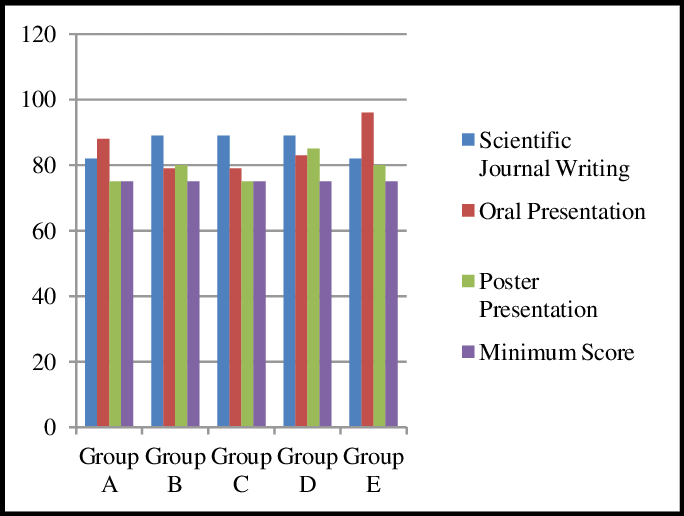
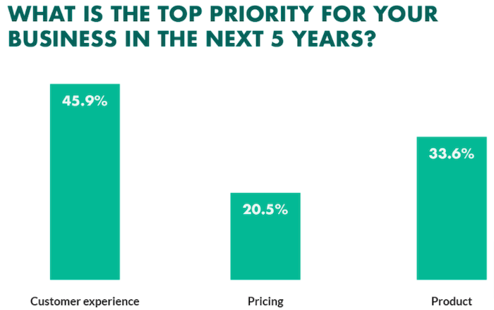
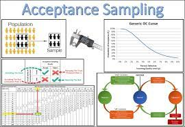
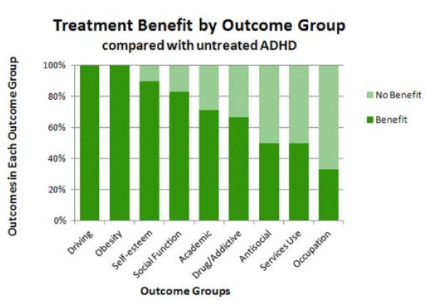
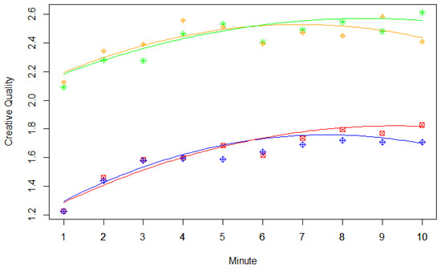

Medical Research:

In clinical trials, researchers may use Spearman's rank correlation to assess the relationship between two variables, such as a patient's age and their response to a particular treatment. This is useful when the data is not normally distributed, or when the variables are measured on an ordinal scale.
Education Assessment:

In educational research, Spearman's rank correlation can be used to measure the relationship between students' rankings in different subjects. For example, it can help determine if there is a consistent pattern in how students perform across various subjects.
Customer Satisfaction:

Rank correlation can be used to assess the agreement between customer rankings of products or services and their overall satisfaction.
Consumer Surveys:

Rank correlation can be used to measure the association between consumer rankings of products or brands and their preferences.
Social Surveys:

Rank correlation can be used to analyze the association between rankings of different variables in social research, such as income and education levels.
Manufacturing:

Rank correlation can be used to assess the agreement between the rankings of different quality control inspectors when evaluating product quality.
Clinical Trials:

Rank correlation can be used to assess the relationship between treatment groups and patient outcomes when the data may not follow a normal distribution.
Psychology:

Rank correlation can be used to analyze the relationship between variables like intelligence and creativity or to assess the agreement between different raters in psychological assessments.